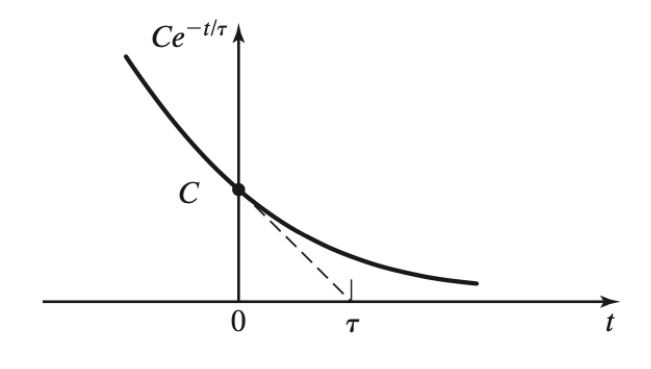
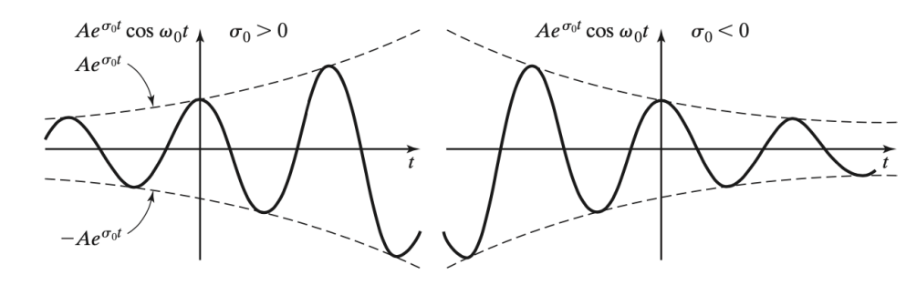

연속 시간 신호
신호 변환 (transformation of signals)
| Name | \(y(t)\) |
|---|---|
| Time reversal | \(x(-t)\) |
| Time scailing | \(x(at)\) |
| Time shiting | \(x(t-t_{0})\) |
| Amplitude reversal | \(-x(t)\) |
| Amplitude scailing | \(Ax(t)\) |
| Amplitude shiting | \(x(t)+B\) |
주기 함수(periodic signals)
주기(period)가 T인 신호는 아래와 같은 수식을 만족한다.
\[x(t) = x(t + T), T > 0\]
가장 작은 주기 T를 기본 주기(fundamental period)라 부르고 \(T_0\)으로 표현한다. 기본 주기가 \(T_0\)라면 아래와 같은 식을 통해 기본 주파수를 얻을 수 있다.
\[f_0 = \frac{1}{T_0}Hz\]
\[w = 2\pi f_0 = \frac{2\pi}{T_0}rad/s\]
주기 신호의 덧셈
\[x(t) = x_1(t)+x_2(t)+\cdots+x_N(t)\]
위 식에서 \(x(t)\)의 주기를 알기 위해서는 아래와 같은 과정을 통해 알 수 있다.
(각 신호의 주기 비율이 유리수(정수)배 일 때는 주기신호 끼리 더하면 x(t)는 주기 신호임을 알 수 있음.)
> 1. 각 신호들의 주기를 파악
> 2. \(T_1/T_i\)를 기약 분수 꼴로 구하기 \(\therefore i-1\)개의 기약분수를 얻게 됨
> 3. 2과정을 통해 얻은 기약 분수들의 최소공배수 \(k_0\)를 찾기 > 4. \(x(t)\)의 주기 T_0$ 다음과 같음.
> \[T_0 = k_0 \cdot T_{01}\]
공학에서의 exponential fuction이란
\(x(t) = Ce^{at}\)가 있을 때 C와 a의 형태에 따른 \(x(t)\)의 변화에 대해 다룰 예정이다.
C와 a가 실수(real)일때
여기서 a < 0일 때의 \(x(t)\)는 아래와 같다.
- a > 0일때, 지수함수는 증가하는 형태
- a = 0일때, t와 무관하게 계속 \(x(t)= C\)
- a < 0일때, 지수함수는 감소하는 형태
\[x(t) = Ce^{at} = C e^{-t/\tau}, \tau > 0\]
\(\tau\)는 시상수(time constant)를 의미

위 그림을 통해 알 수 있듯이 \(t = 0\) 일 때의 순간 기울기는 \(-\frac{C}{\tau}\) 이다. 만약 이러한 기울기로 신호가 감소한다면 \(t = \tau\) 일 때 신호는 사라지게 된다.
\(\to Ce^{-1} = 0.368C\) 즉, t가 \(\tau\)인 시점에서 신호의 진폭은 약 36.8%로 감소하게 된다.
C는 복소수, a는 허수일 때
\[x(t) = Ce^{at}; C = Ae^{j\phi} = A\angle\phi, a=j\omega_0\]
여기서 \(x(t)\)는 오일러 공식을 통해 아래와 같이 표현할 수 있다.
\[x(t) = Ae^{j\phi}e^{j\omega_0 t} = Ae^{j(\omega_0 t+\phi)}\]
\[= Acos(\omega_0 t+\phi) + jAsin(\omega_0 t+\phi)\]
각 주파수가 \(k \omega_0\)(여기서 k는 정수)인 신호들의 집합을 harmonics라 부른다. harmonics는 이후에 나올 푸리에 급수 전개에 사용된다.
C와 a가 복소수일 때
\[x(t) = Ce^{at}; C = Ae^{j\phi} = A\angle\phi, a=\sigma_0+j\omega_0\]\[x(t)= Ae^{\sigma_0t}cos(\omega_0 t+\phi) + je^{\sigma_0t}Asin(\omega_0 t+\phi) = Re[x(t)] + Im[x(t)]\]
위 식에서 실수 부분인 \(Re[x(t)]\)을 살펴보면 A는 x(t)의 진폭의 크기를 결정하고 \(\phi\)는 위상. \(\omega_0\)는 각주파수로 회전속도, \(\sigma_0\)는 신호가 점점 커질지 작아질지를 결정한다.
